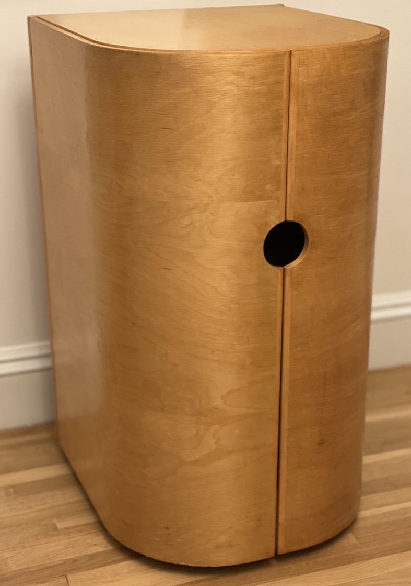

John Deere Green Coffee Table
All felt stool
Classic Arcade Game Coffee Table

Coffee Table

Apple TV Remote grip


Adaptable bike chain guard (prototype)


Razorfish Conference Table

Happy Feet interactive scultupure


Flat Pack Bench

Fastener-less Shelving


Carved Plywood Chair


Curved Plywood Bar


Organic Folding Table


Modular Plywood Bench

Ergonomic Cane Concept

Pepto Bismol Bottle Concept


Student Mailboxes

Timberframe Pavilion